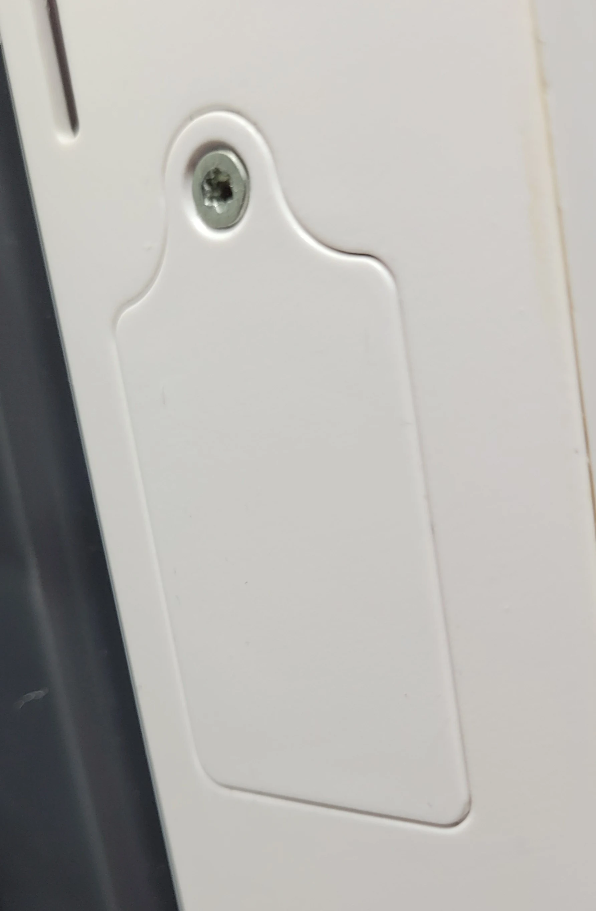

Installer Lidlomix Pro sur le Connect pas à pas
Ce guide concerne l’installateur USB pour Monsieur Cuisine Connect sous Windows. Préparez l’ordinateur, le fichier d’installation et le câble de maintenance.
Ce qu’il faut préparer
- Préparez votre Monsieur Cuisine Connect. Avant toute modification, l’installateur vérifie que votre appareil est compatible avec le paquet.
- Prévoyez un ordinateur sous Windows 10 ou 11 avec .NET Framework 4.8, le paquet d’installation complet et assez de place pour les catalogues de recettes.
- Prévoyez un embout ou un tournevis Torx TT10 pour la vis de la trappe.
Câble de maintenance USB-A
Pour le port de maintenance Android USB du Connect, utilisez un câble prévu pour cette connexion, avec deux fiches USB-A mâles identiques. Si l’ordinateur est juste à côté du robot, 0,5 m suffit. Un câble de 1 m laisse plus de marge.

Les essais du Monsieur Cuisine Smart et des autres modèles sont en cours. La prise en charge de ces appareils est prévue et reste à confirmer.
Installation par USB
Décompresser le fichier
Décompressez le ZIP entier dans un dossier de l’ordinateur. Lancez Lidlomix-Pro-Instalator-USB.exe depuis ce dossier.
Relier le robot à l’ordinateur
Éteignez et débranchez le Connect. Sous la base, retirez la vis avec un embout Torx TT10, puis enlevez la trappe. Reliez l’ordinateur au port Android USB avec le câble de maintenance. Rebranchez le robot sur le secteur, allumez-le, déverrouillez l’écran et laissez-le au repos.

Trappe de maintenance fermée sous la base du Connect. 
Pour l’installation, utilisez uniquement le port Android USB indiqué par la flèche. La croix marque le port Power PCB USB. Lancer l’installateur
Cliquez sur Start. Si le robot demande d’autoriser le débogage USB, confirmez sur son écran. Windows doit détecter la connexion Android USB.
Conserver la sauvegarde
Avant l’installation, l’installateur sauvegarde les fichiers d’installation de l’application d’origine (APK). Gardez cette sauvegarde pour pouvoir restaurer l’application d’origine en cas de problème. Laissez le câble branché jusqu’à ce que l’installateur confirme la fin de l’opération.
Vérifier le premier démarrage
Ouvrez les programmes et le catalogue de recettes, puis choisissez votre langue dans les réglages. Pour changer l’écran de démarrage par défaut, cherchez Écran d’accueil dans les réglages Android.

Choix de la langue sur le robot

Si l’installation s’interrompt
Le bouton Kopie i logi (Sauvegardes et journaux) donne accès au journal de l’essai et à la sauvegarde de l’application d’origine, si elle a été créée. La restauration complète du système nécessite une procédure de maintenance. Sur le forum, indiquez le modèle, la version de Windows, le numéro de l’étape et le message affiché. Retirez le numéro de série et les données de compte avant de partager un extrait du journal.
Parler de l’installation sur le forum